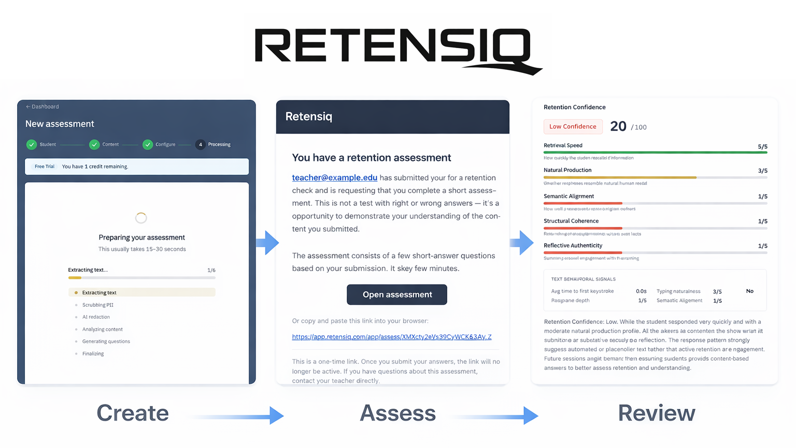
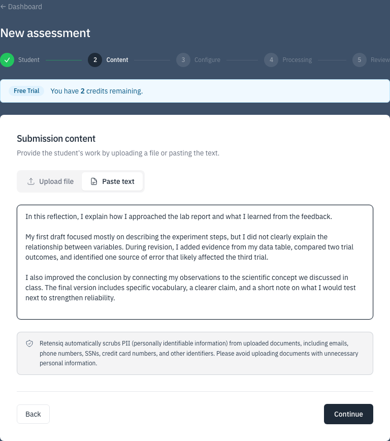
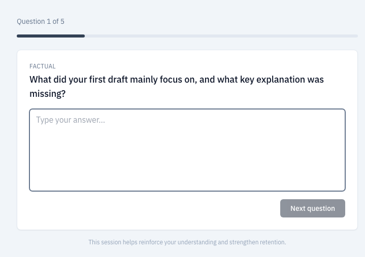
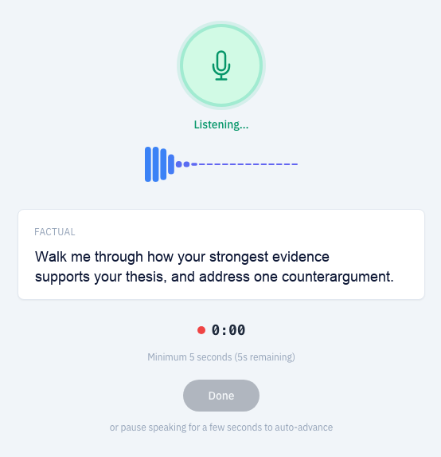
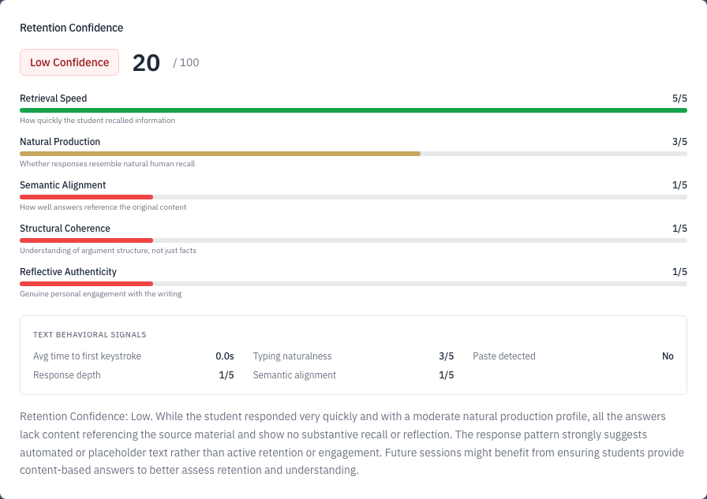

Detection tools often return an AI-likelihood score instead of a constructive next step. Retensiq flips that model: students demonstrate understanding of their own submission, and you get follow-up evidence you can act on.

Move from student work to a review-ready follow-up in three steps. Every assessment is grounded in what the student actually submitted.
Upload or paste the student's work. Retensiq uses that content to generate questions tied directly to what they wrote.

Retensiq drafts a mix of factual, vocabulary, and reflective prompts so responses require real understanding, then lets teachers deliver the assessment in the response mode that best fits the learner.


Students complete one short assessment at a time. You review answers and concise signals in a workflow designed for fast teacher judgment.

No. Retensiq is not an AI detector. It gives teachers a fast follow-up workflow to evaluate how well students understand what they submitted.
Retensiq focuses on comprehension and retention, using submission-grounded questions plus lightweight timing and fluency signals.
Most student assessments take around 3–7 minutes, depending on question count and whether the assessment is voice or text.
AI detection can be noisy and hard to act on. Retensiq centers classroom decisions on demonstrated understanding, with evidence tied to the student's own work.